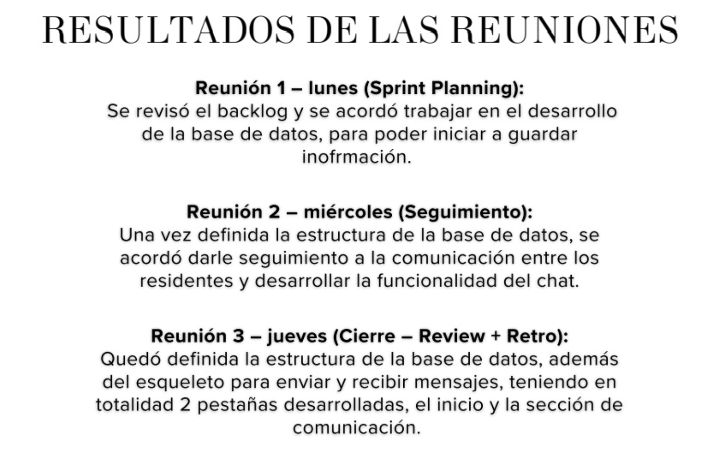
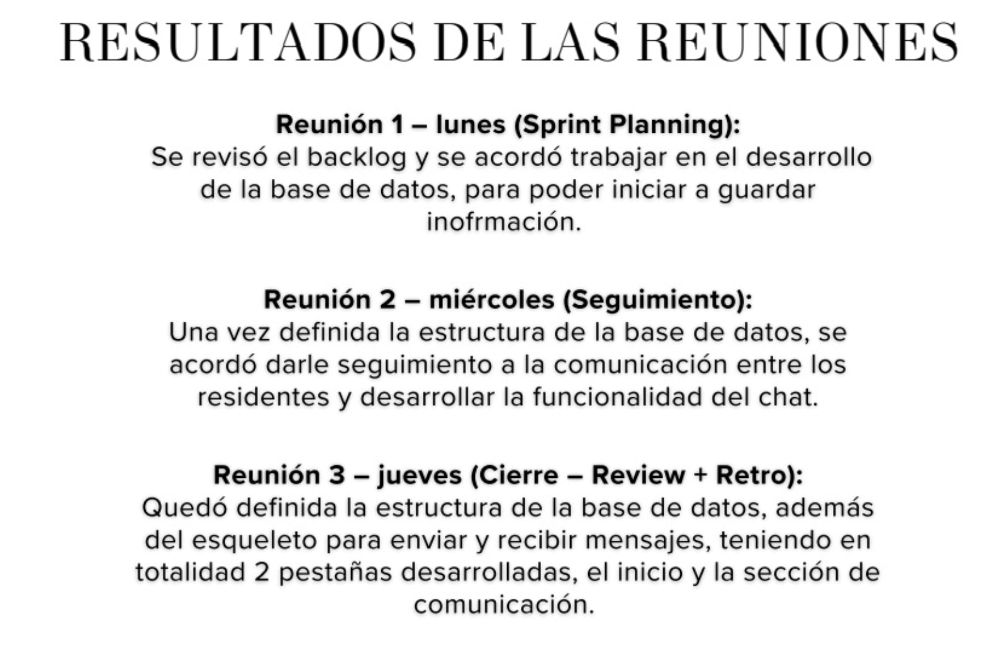
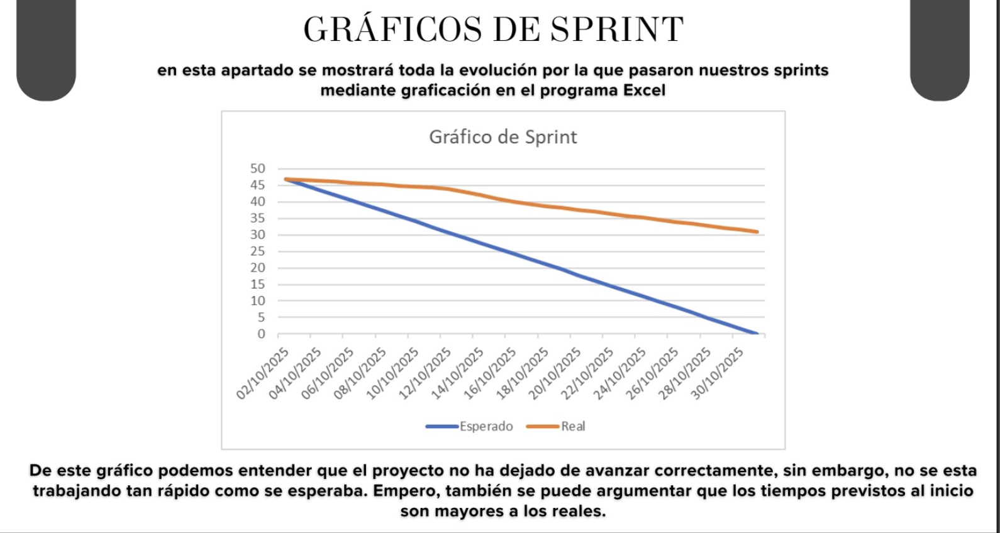
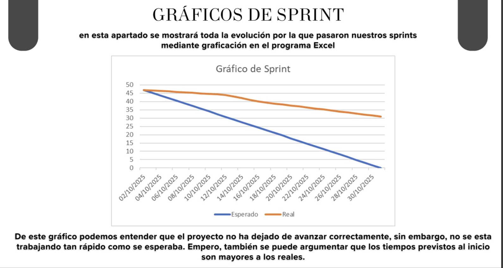

Objetivo
Desarrollar un sistema que gestione la comunicación de una residencia.
Documentación de proceso
Aquí se documenta el trabajo por unidad/sprint con evidencias (capturas) y explicaciones: qué se hizo, por qué, qué se logró y qué se aprendió.
Durante nuestro proceso en cuanto a las actividades ajustamos muchos cambios, más de los que pensamos.
Hubo muchos puntos de vista diferentes pero aún así pudimos avanzar de manera coordinada e igualitaria. Entendimos lo eficaces que podemos ser si trabajamos juntos
Desarrollar un sistema que gestione la comunicación de una residencia.
Desarrollamos un sistema capaz de cubrir todas las carencias comunicativas de una comunidad
Cada evidencia incluye imágenes y una explicación breve.
Se generó el primer backlog del proyecto y se utilizó el programa de trello como organizador, se presento el backlog y el sprint inicial del proyecto
se desarrolla en codigo un sprint y backlog, sin embargo, es de un tema distinto al producto final.
Se desarrollo por primera vez en codigo el proyecto definitivo, utilizando calendario, backlog, sprint y PMI
revisión y ajuste de los Sprints Se hizo avance de los sprints y correciones
revisión y ajuste de los Sprints y el backlog Se continuo con los segundos sprints y correciones

 

Revisión y ajuste de los Sprints y el backlog
Producto final U3 Recopilacion de avances y desarrollo del proyecto
 

evisión y ajuste de los Sprints y el backlog